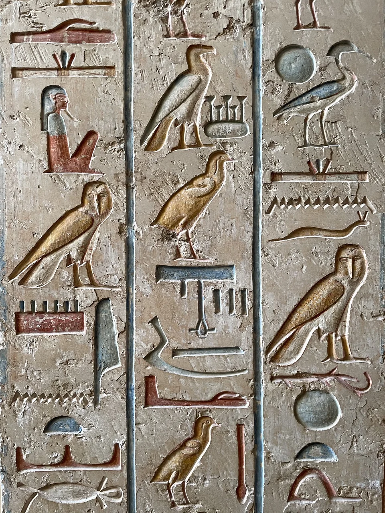

BREAKING NEWS
Mysterious L-shaped structure discovered near Giza Pyramids
May 18, 2024
Featured
Culture
India won the international award for the best cultural country
India has been awarded
the best cultural country award by the International Cultural Organization for its rich and
diverse cultural heritage.
June 1, 2021
Featured
Historical
Lost texts from Mount Vesuvius eruption deciphered with new AI
New AI techniques are helping researchers read previously illegible texts carbonized
after the eruption of Mount Vesuvius in A.D. 79, revealing new historical insights.
May 10, 2024

Featured
Historical
Gobekli Tepe reveals new 11,000-year-old finds.
Recent excavations at Gobekli Tepe have uncovered more ancient artifacts, including
statues and carvings, dating back 11,000 years, offering a glimpse into early human
civilization.
May 10, 2024
Featured
Lifestyle
The London National Gallery celebrates 200 years
The London National Gallery is celebrating its bicentennial with special exhibitions and events, reflecting on its history and looking towards future innovations in public outreach.